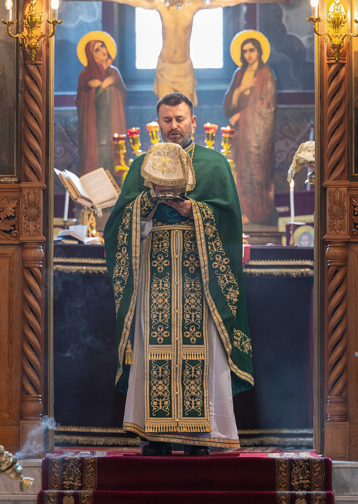
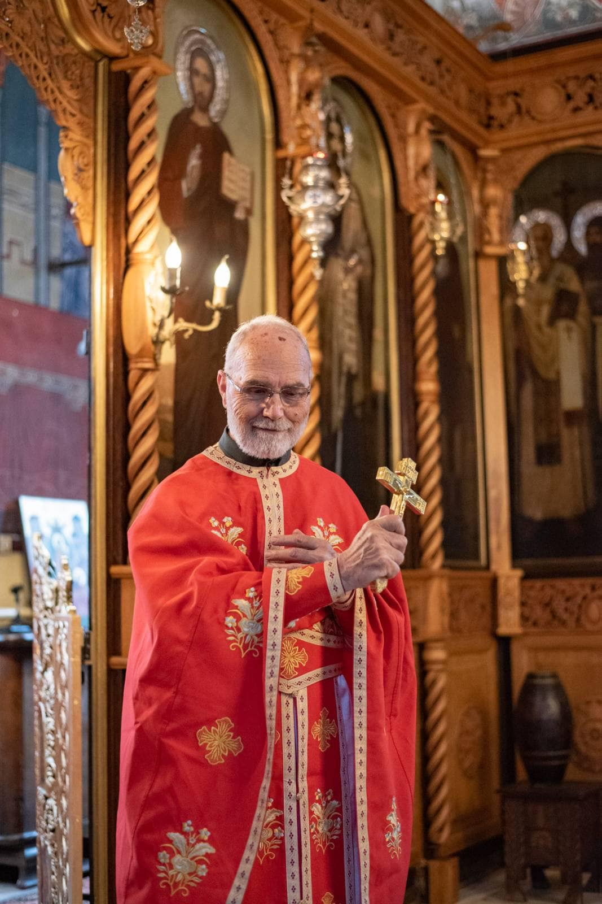
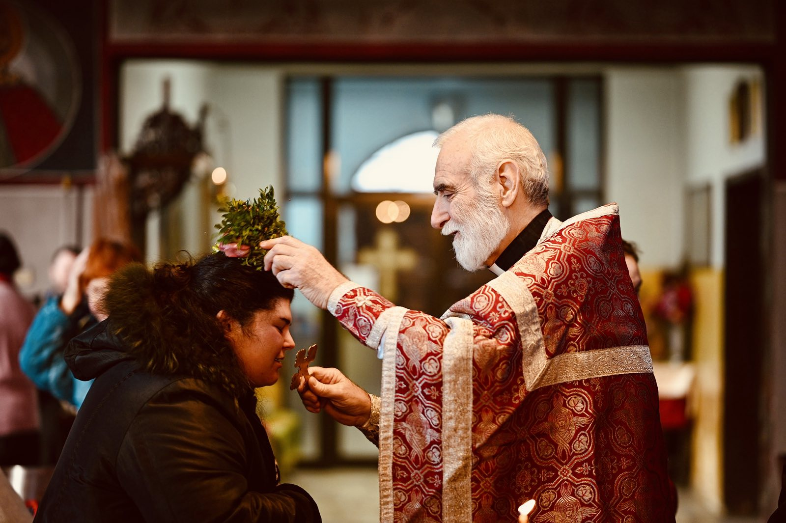
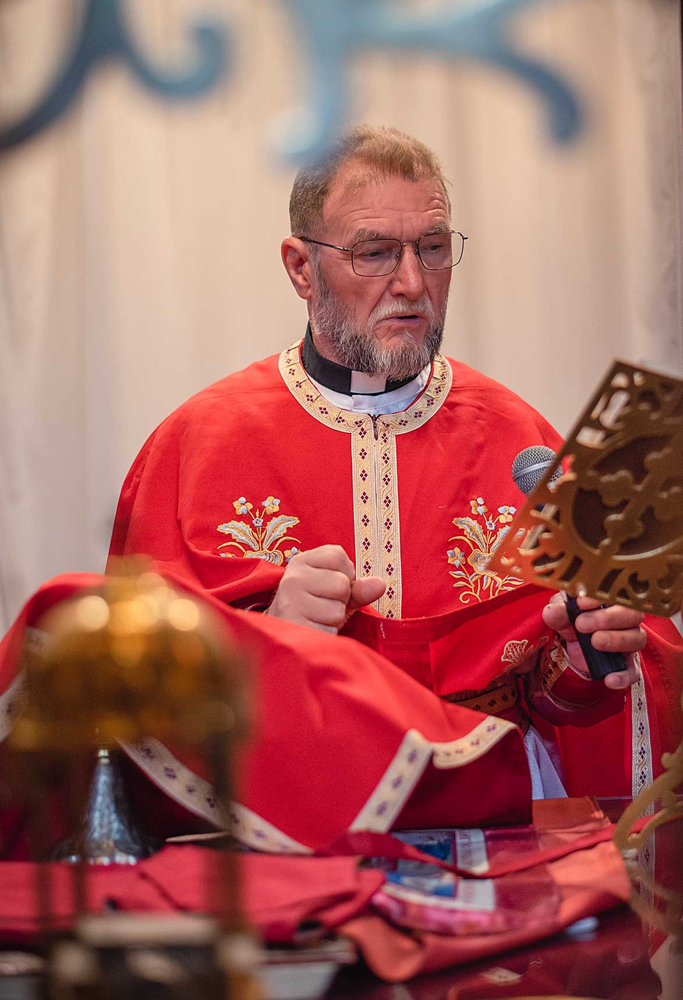
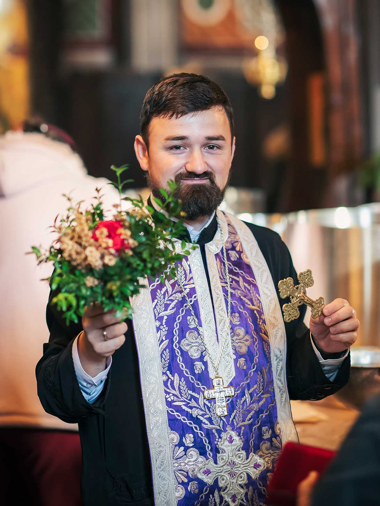

Храмът е построен през 1927г от бежанци, които населяват квартала. Част от средствата са изпратени от българи в Америка. Трикорабна базилика с притвор и колонада на западната страна с дължина 23м, ширина – 12м, височина – 7м. Няма куполи. Осветена е от Знеполския епископ Паисий на 25.12.1927г. Има три Св.престола, централен, северен, посветен на Св.Иван Рилски (с храмов празник на 19 октомври) и южен – на Св.Константин и Елена (с храмов празник на 21 май). Вдясно от притвора има параклис, посветен на Св.Симеон Стълпник (с храмов празник на 24 май). Владишкият трон и царските двери са дарени от катедрален храм "Св.Неделя" след атентата през 1925г. – с дърворезба. Храмът е изографисан през 1997г. Храмовият празник е с подвиждна дата на Петдесетница (Света Троица) за прослава явяването на Светия Дух пред апостолите на 50-я ден след Възкресението (Великден).

Предстоятел

Енорийски свещеник

Енорийски свещеник

Енорийски свещеник

Енорийски свещеник
Църковният хор при храм „Света Троица“ участва активно
във всички неделни и празнични богослужения.
Банка: ЮРОБАНК БЪЛГАРИЯ АД
IBAN: BG57BPBI79391078639401
BIC: BPBIBGSF
Титуляр: Храм „Света Троица“
ХРАМЪТ СЪБИРА ДАРЕНИЯ ЗА:
(моля, уточнете в основание за превода, ако дарението ви е целево)
• Конструктивно укрепване и дренаж
• Ремонт на покривната част над колонадата
• Реконструкция на входа и притвора
• Подобряване на вътрешните помещения
• Външно художествено осветление
• Нова система за озвучаване
• Нова система за видеонаблюдение
Даренията се използват целево и поетапно според приоритетите на храма.